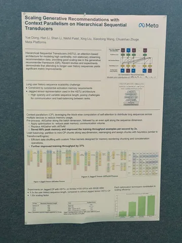
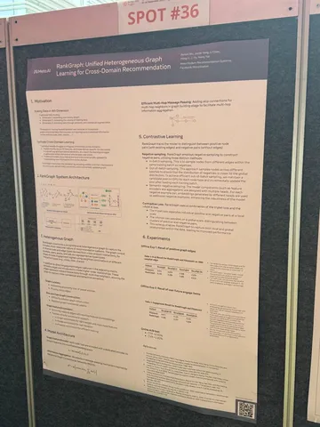
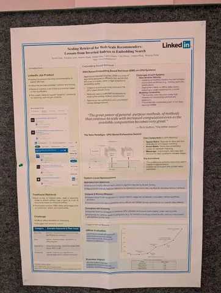
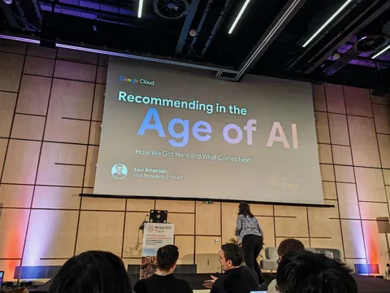

Продолжаем смотреть на конференцию RecSys глазами инженеров Яндекса. Сегодня подсветим три интересные работы и вдохновляющий keynote от Xavier Amatriain.
Scaling Generative Recommendations with Context Parallelism
on Hierarchical Sequential Transducers
Авторы рассказали, как наращивают длину пользовательской истории при обучении HSTU-моделей. Оказалось, что использование истории длиной более 10 К событий всё ещё даёт прирост продуктовых метрик. Работа исключительно инженерная, но полезная для масштабирования используемых длин в истории.
Исследователи используют подход context parallelism: шардинг q/k/v по длине последовательностей в батче на P частей. При вычислении аттеншна ключи и значения нужно агрегировать со всех частей. Вместо стандартной схемы all-gather предлагают использовать all-to-all, чтобы пересылать только нужные блоки. Как итог, память под активации и KV-кэш на каждом GPU снизилась в ~1/P, а поддерживаемая длина истории выросла с 3 K до 16 K токенов.
RankGraph: Unified Heterogeneous Graph Learning for
Cross-Domain Recommendation
На конференции прозвучало несколько докладов о графовых нейросетях (GNN), но особенно выделился этот. В онлайновых A/B-тестах решение показало рост продуктовых метрик: +0,92% к кликам и +2,82% к конверсиям.
Для построения графа используются все доступные поверхности — лента, видео, рекламные объявления. Формируется единый гетерогенный граф, включающий пользователей и айтемы из разных доменов. Модель основана на RGCN (Relational Graph Convolutional Network) и обучается на contrastive-лоссы (triplet loss и InfoNCE). Для каждого отношения (типа ребра) агрегируются сообщения от соседей этого типа; затем результаты объединяются через «mixer» и обновляют представление узла.
Ключевой момент — сохранение самопетель (self-loop), чтобы прежнее представление узла также учитывалось при обновлении. Модель используется как для кандидат-генерации (user-to-item и item-to-item), так и как источник эмбеддингов пользователей и объектов, которые затем передаются в другие доменные модели в качестве фичей.
Scaling Retrieval for Web-Scale Recommenders: Lessons from Inverted Indexes to Embedding Search
LinkedIn поделились историей эволюции своей retrieval-системы. Начинали, как многие, с инвертированных индексов: решение быстрое и объяснимое, но требует ручного тюнинга (query expansion, переписывание запросов). Сверху добавили ML — learning to retrieve, графовые методы, атрибутные связи. Это помогало, но ограничения оставались: много ручной работы, оффлайн-билд индекса раз в неделю, больно интегрировать эмбеддинги.
Следующий шаг — embedding-based retrieval на ANN внутри старой системы. Но с такой архитектурой тяжело экспериментировать: квантование портило качество, CPU не тянуло, итерации шли медленно.
Решение — построить с нуля GPU retrieval-систему. Теперь это огромные sparse/dense матрицы в GPU-памяти без «костыльного» ANN. KNN считается честно и быстро, а терм-поиск и эмбеддинги можно гибко комбинировать. Внедрили множество оптимизаций: кастомные CUDA-кернелы, bfloat16, батчинг, шардирование по регионам.
Результаты: –75% инфраструктурных затрат и +30% к скорости экспериментов. В продакшене на кейсе job-matching это дало +4,6% к числу поданных заявок и +5,8% к budget utilization в промовакансиях.
Главный инсайт: inverted index хороши для классического поиска, но в современных ML-рексис они быстро достигают потолка. GPU-based EBR (Embedding-Based Retrieval) даёт гибкость и multi-objective-оптимизацию уже на этапе retrieval, а значит — приносит больше пользы для бизнеса.
Напоследок — впечатление от выступления Xavier Amatriain, посвящённого комплексному подходу к развитию рекомендательных систем:
Главный тезис: нельзя сильно вырасти, если сосредотачиваться на улучшении одной метрики. Развитие должно охватывать сразу несколько уровней — пользовательский опыт, в том числе с применением генеративного AI, алгоритмический стек рекомендаций и сам продукт.
@RecSysChannel
Заметки собрали
